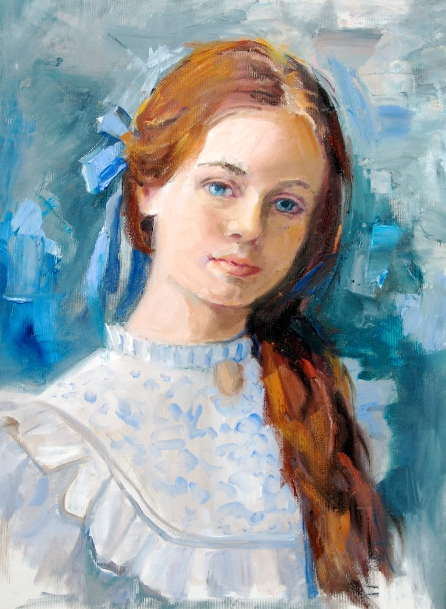

1982 Art Journal
- Artist: Patricia Ford Crass (American, 1923–2024)
- Date: 1982-1985
- Medium: Watercolor and ink on paper (bound sketchbook journal)
- Subject: Studies from life, landscapes, and Asilomar workshop exercises
- Context: Created during a period of intensive Bay Area study, including live-model classes at Jade Fon's watercolor workshop at the Asilomar in Pacific Grove on July 4-9, 1982. Other artists included Roberta Carter Clark and Gerald F. Brommer.
- Collection: Family private collection
Journal & Artistic Notes
Throughout the 1980s, Patricia Ford Crass kept illustrated art journals filled with on-location watercolor studies, sketches, and handwritten reflections on composition and technique. Created in 1982—the same year she studied live-model drawing and painting at Jade Fon's watercolor workshop at the Asilomar in Pacific Grove—this journal remains in the family's private collection.
